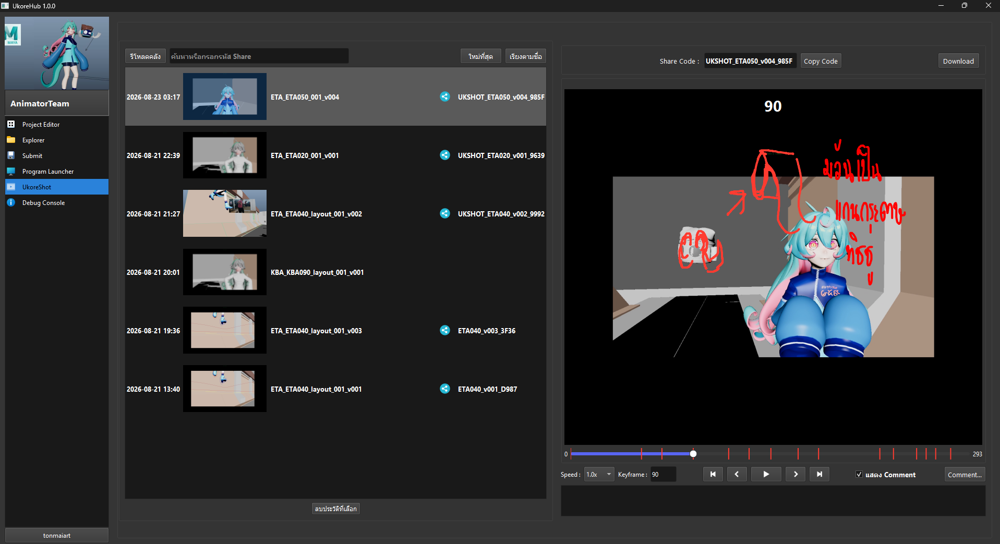
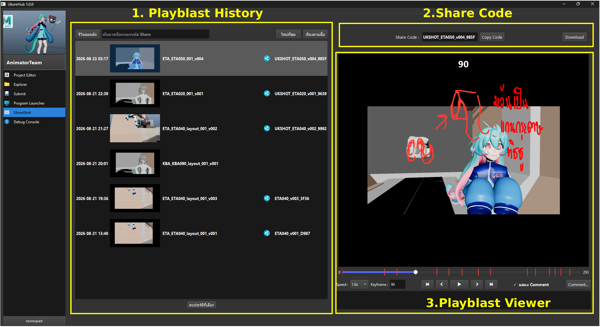
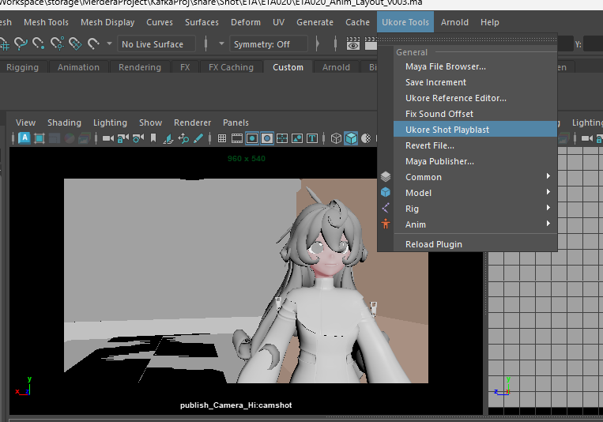

Ukore Shot¶

Ukore Shot เป็น Plug-in เสริมของ Ukore Hub ซึ่งจะปรากฎให้ใช้งานในบาง Repo เช่นแผนก Animator
โดย Ukore Shot เป็น Plug-in ที่ช่วยให้ Animator สามารถกด Playblast จาก Maya และสามารถเปิดดู , วาดเส้น Comment แต่ละ Keyframe และสามารถแชร์ให้คนอื่นๆในแผนกได้อย่างง่ายดาย
ส่วนประกอบต่างของโปรแกรม¶

1. Playblast History¶
แสดงรายการ Playblast ทั้งหมด โดย Playblast จะแบ่งเป็นสองแบบคือ Playblast จากเครื่องของเรา (เราเห็นและแก้ไขคอมเมนต์ได้เพ่ยงคนเดียว) และ Playblast ที่เปิดแชร์ (คนอื่นสามารถเห็นและแก้ไข Comment ได้)
ช่องค้นหา : สามารถใช้ค้นหาชื่อ Shot หรือกรอก Share Code ของคนอื่นแล้วกด Enter เพื่อโหลดรายการ Playblast ของคนอื่นขึ้นมาได้ ปุ่มลบวิดีโอด้านล่าง : เลือกรายการ Playblast แล้วกดลบได้
หมายเหตุ: สามารถแยกแยะ Playblast ที่แชร์กับ Playblast บนเครื่องด้วยการ สังเกตุที่ icon share สีฟ้าในรายการ
2. Share Code¶
จะเป็นพื้นที่แสดงรหัส Share Code โดยเราสามารถ Copy Code แล้วส่งต่อให้คนอื่นได้
หมายเหตุ : ต้องกดเปิดแชร์ก่อนในครั้งแรก หากวิดีโอนั้นไม่เคยเปิดแชร์มาก่อน
3. Playblast Viewer¶
เราสามารถเล่นวิดีโอ Preview ทางขวามือได้ โดยสามารถกดปุ่ม shortcut ได้ดังนี้
- Spacebar - เล่น/หยุด
- A, D - เลื่อนเฟรมไปทางซ้ายขวา
- Shift A, Shift D - ไปย้งเฟรม comment ก่อนหลัง
Ukore Shot จะทำงานควบคู่กับ Ukore Shot Playblast ของ Maya
ใน Maya แถบ Ukore Tools จะมีปุ่ม Ukore Shot Playblast เมื่อกด Maya จะ playblast กล้องปัจุบัน โดยเราสามารถเช็คประวัติการ playblast ทั้งหมดได้ที่ Tab Ukore Shot ใน Ukore Hub นั่น้อง
โดยเราสามารถคอมเมนต์วิดีโอได้ด้วยการกด comment สามารถอ่ายต่อได้ที่ การ Comment Editor
การ Playblast ฝั่ง Maya¶

วิธีการ Playblast ใน maya เพื่อส่งไป Ukore Shot Tab ต้องกดผ่าน Ukore Tools > Ukore Shot Playblast